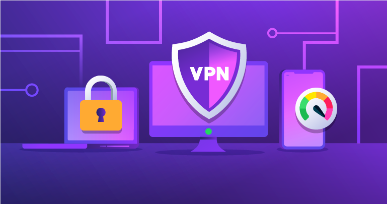
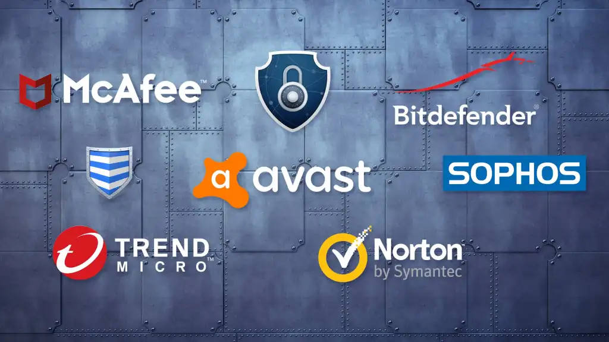
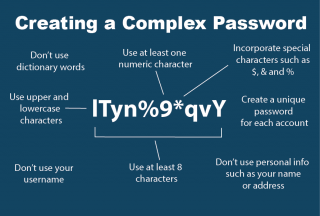
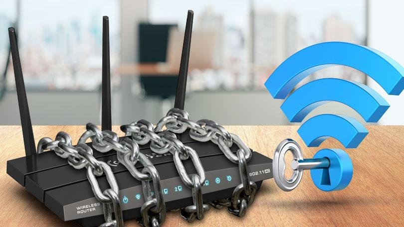
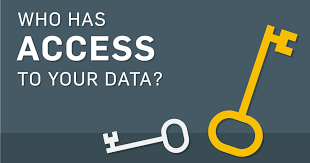
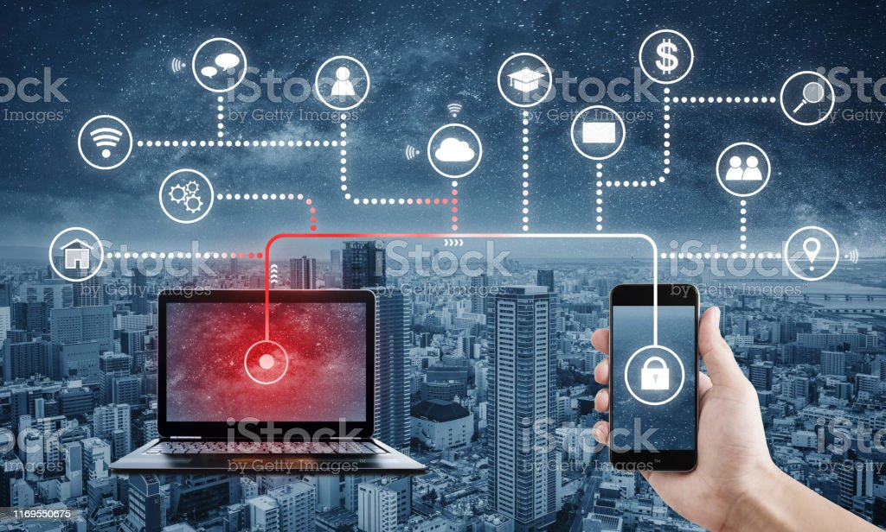
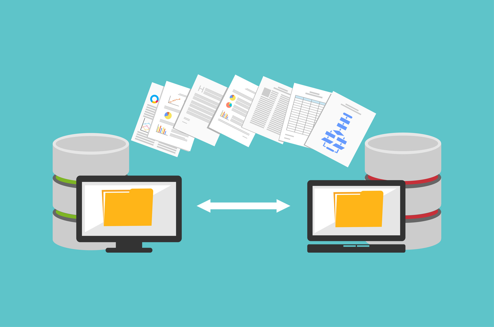
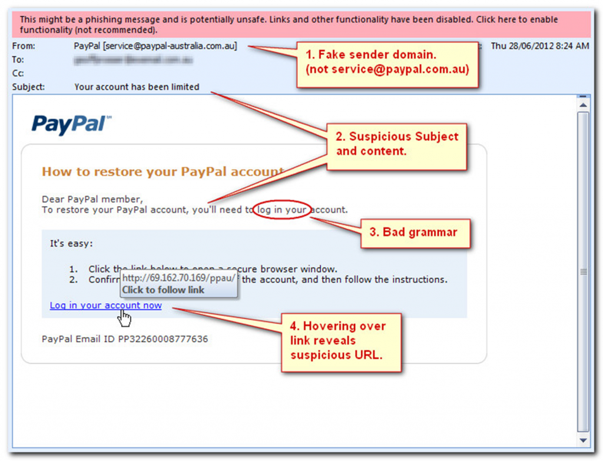

Cybercrimefight.com

Cyber security is the application of technologies, processes and controls to protect
systems, networks, programs, devices and data from cyber attacks.
It aims to reduce the risk of cyber attacks and protect against the unauthorised exploitation of
systems, networks and technologies..
TIPS AND TECHNIQUES
1. Get a VPN
Anyone on the internet can benefit from a VPN. The term stands for Virtual Private Network, and it's another layer of security masking your online activity from third parties. It's most useful when you are connecting to any public internet connection, like a coffee shop or an Airbnb. With a VPN, your new, secured connection will separate the hacker from the data that they are hoping to steal.
2. Reliable Antivirus Software
A good, reliable antivirus program is a basic must-have of any cyber security system. Apart from that, anti-malware software is also an essential. They work as the final frontier for defending unwanted attacks, should they get through your security network.They work by detecting and removing virus and malware, adware and spyware. They also filter out potentially harmful downloads and emails.
3. Use Complex Passwords
Almost every computer and Web-based application requires a key for accessing it. Whether it is the answers to security questions or the passwords, make sure you create complex ones to make it difficult for hackers to crack them. Using space before and/or after your passwords is also a good idea to throw the hacker off.
4. Install Encryption Software

If you deal with data pertaining to credit cards, bank accounts, and social security numbers on a daily basis, it makes sense to have an encryption program in place. Encryption keeps data safe by altering information on the computer into unreadable codes. Even if your data does get stolen, it would be useless to the hacker.
5. Protect with a Firewall

A firewall works by blocking or deterring viruses from entering your network, while an antivirus works by targeting the software affected by a virus that has already gotten through. They work well together, in other words. Putting up a firewall aids in protecting a small business's network traffic. It can stop hackers from attacking your network by blocking certain websites.
6. Secure Your Wi-Fi Network
Say goodbye to the WEP network if you still use it and switch to WPA2 instead as the latter is much more secure. WPA2 is an increasingly common standard for online security, so there's a good chance you're already using it. Also to protect your Wi-Fi network from breaches by hackers, change the name of your wireless access point or router.
7. Limit Access to Critical Data
Keep the number of people with access to critical data to a minimum, never share your personal information with someone else on social media or the Internet. This will minimize the chances of a data leak.
8. Secure Laptops and Smartphones
Because of the ease of carrying them around, laptops and smartphones hold a hell of a lot of valuable data, and that is also the reason they are at a higher risk of getting lost or stolen. Make sure that they have a good securty system in place with appropriate back ups.
9. Back Up Data Often
Either manually back up all data to an external hard drive or the cloud, or simply schedule automated backups to ensure that your information is stored safely. That way, even if your systems are compromised, you still have your information safe with you. This ensures that no single point of failure can erase months or years of historical data.
10. Ignore Suspicious Emails
Make it a habit to never open or reply to suspicious-looking emails, even if they appear to be from a known sender. Even if you do open the email, do not click on suspicious links or download attachments. Doing so may make you a victim of online financial and identity theft through a “phishing” scam